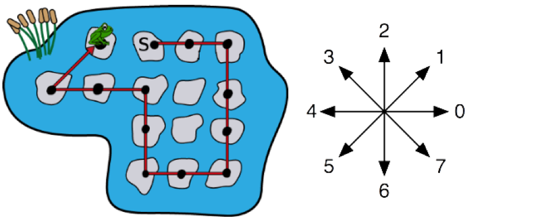
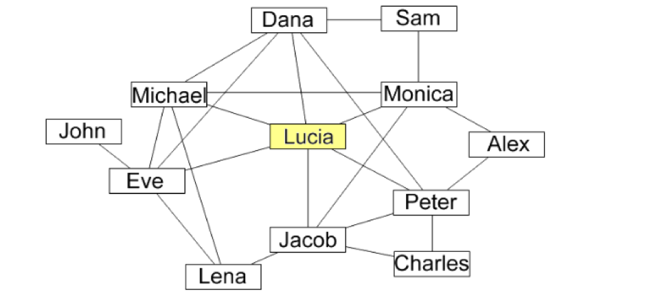

Mahasiswa dapat memodelkan permasalahan studi kasus Sequence.
Mahasiswa dapat memodelkan permasalahan studi kasus Pemilihan.
Mahasiswa dapat memodelkan permasalahan studi kasus Perulangan.
Ulasan Teori
Algoritma adalah urutan langkah-langkah logis (alur pikiran) dalam menyelesaikan suatu pekerjaan. Dalam algoritma, yang akan melaksanakan alur pikiran tadi adalah komputer. Perintah tersebut dapat diberikan dalam bentuk kumpulan instruksi yang disebut dengan program. Program tersebut tertulis dalam suatu bahasa yang disebut dengan bahasa pemrograman. Suatu program disusun dengan sistematis, artiya urutan langkah-langkah yang disusun harus jelas dengan memiliki pola tertentu. Selain itu suatu program harus logis, masuk akal, bisa dibaca dan diterima oleh akal serta bisa dinilai benar salahnya.
Sebagai tambahan, suatu algoritma harus memenuhi beberapa kriteria berikut:
Input
Terdapat inputan bernilai nol ataupun lebih banyak sebagai sumber yang berasal dari luar program.
Output
Output minimal terdiri dari satu kuantitas hasil.
Definiteness
Setiap instruksi yang diberikan harus jelas dan tidak ambigu.
Finiteness
Jika kumpulan instruksi algoritma ditelusuri, maka tahapan algoritma akan berakhir setelah sejumlah langkah yang terbatas.
Effectivenes
Setiap instruksi harus cukup mendasar sehingga mudah untuk dilakukan sesuai dengan kebutuhan
Algoritma dinilai dari hasil yang benar sesuai keinginan, menghasilkan output yang baik, serta efisiensi (waktu dan memori) algoritma yang baik pula. Struktur Dasar Algoritma terdiri dari :
Struktur runtutan/sekuensial
Digunakan untuk program yang pernyataannya sequential atau urutan.
Struktur pemilihan
Digunakan untuk program yang menggunakan pemilihan atau penyeleksian kondisi.
Struktur perulangan
Digunakan untuk program yang pernyataannya akan dieksekusi berulang-ulang.
Langkah-langkah pembuatan algoritma secara ringkas sebagai berikut:
Pahami masalah
Tentukan kondisi awal: Data input
Tentukan kondisi akhir: Data output
Data lain (jika ada)
Data pendukung lain yang dibutuhkan pada proses penyelesaian masalah
Tentukan langkah penyelesaian masalah mulai dari kondisi awal, hingga bisa tercapai kondisi akhir.
Dalam menyusun langkah mungkin melibatkan:
a. Urutan/sequence
b. Pemilihan
c. Perulangan
Praktikum
Percobaan 1: Menyelesaikan Studi Kasus Tentang Sequence
Setiap pagi gabrielle melakukan rutinitas secara berurutan sesuai gambar 1 berikut.
Percobaan01-1
Akan tetapi, terdapat 2 rutinitas yang tidak tepat urutanya. Bagaimanakah urutan yang benar?
Jawaban
Urutan yang benar adalah 1-2-4-3-5-6/7-8. Penjelasan urutan yang benar sebagai berikut :
Gabrielle bangun tidur
Kemudian berolahraga
Setelah selesai berolahraga dilanjutkan dengan mandi
Setelah selesai mandi, gabrielle menyisir rambut
Kemudian, dilanjutkan dengan sarapan wortel di pagi hari
Jika kondisi hujan, gabrielle akan memakai payung dari daun dan jalan kaki untuk pergi ke sekolah. Jika cerah, bersepeda adalah cara yang dipilih untuk pergi ke sekolah
Tahap yang terakhir, sesampai di depan sekolah gabrielle bergegas masuk ke gedung sekolah
Seekor katak berolahraga dengan melompat-lompat di sekitar kolam. Katak tersebut melompat dari lily pad ke lily pad yang lain sesuai dengan urutan yang ditunjukkan pada gambar 2 berikut ini.

Studi Kasus Rute Olahraga Katak
Katak memulai olahraganya dari lily pad yang berlabel S dan berakhir pada lily pad seperti yang ditunjukkan pada gambar (katak yang ditampilkan telah selesai melompat). Setiap titik hitam yang ada pada gambar menandai lily pad tempat katak mendarat. Arah panah pada gambar diatas menunjukan Label arah katak melompat. Tuliskan urutan yang dapat mendeskripsikan jalur lompatan katak?
Jawaban
Urutan yang sesuai dengan rute olahraga katak adalah S-0-0-6-6-6-4-4-2-2-4-4-1. Penjelasan urutan yang benar sebagai berikut:
Dari start katak melompat sesuai arah 0
Kemudian melompat lagi sesuai arah 0
Selanjutnya katak belok ke lily pad sesuai arah 6
….
….
Selesaikan permasalahan dibawah ini dengan langkah-langkah logis sesuai dengan ulasan teori yang sudah dijelaskan sebelumnya. “Pak ahmad memiliki sebidang tanah berbentuk persegi. Jika keliling lahan dari pak Ahmad adalah 64m, Berapakah Panjang sisi dan Luas dari lahan pak Ahmad?”
Jawaban
Input : Jumlah keliling lahan pak ahmad
Output : Luas lahan
Data Lain : -
Proses :
Masukkan keliling lahan
Hitung Panjang sisi dari lahan pak Ahmad, Sisi = Keliling : 4
Hitung luas = sisi x sisi
Output luas lahan pak Ahmad
Pertanyaan
Sebutkan secara terurut rutinitas yang Anda lakukan sepulang kuliah seperti percobaan 1 soal ke-1!
Tulis ulang dan lengkapi algoritma yang ada pada percobaan 1 No. 2!
Hitunglah secara matematis hasil dari percobaan 1 soal ke-3! Berapakah hasilnya?
Jika terdapat informasi tambahan sebagai berikut
“Pak Ahmad ingin menanam bunga mawar berbentuk lingkaran pada tengah - tengah lahannya. Pak ahmad ingin memaksimalkan lahannya sehingga sebisa mungkin hanya tersisa sedikit tanah yang kosong. Berapakah luas lahan pak Ahmad yang ditanami bunga Mawar?”
Tuliskan kembali langkah-langkah pembuatan algoritma yang benar!
Setelah data tambahan soal no.4 berapakah luas lahan pak Ahmad yang tidak ditanami bunga mawar ?
Percobaan 2: Menyelesaikan Studi Kasus Tentang Pemilihan
Pada ilustrasi gambar 2 berikut, beaver ingin berenang menyebrang seluruh sungai yang ada. Tetapi beaver hanya diijinkan satu kali saja melewati setiap sungai yang ada. Bagaimana lintasan yang harus dilalui beaver?Gunakan algoritma untuk menyelesaikan permasalahan yang dialami beaver!
Percobaan02-1
Jawaban
Input : Sungai, Informasi keterhubungan sungai (Contohnya A berdekatan dengan B dan D)
Output : Lintasan seluruh sungai
Data Lain : -
Proses :
Beaver berada ditengah-tengah beberapa pertemuan sungai. Dia dapat berenang mulai dari sungai B/D/E/F/G
Jika dimulai dari B maka lintasan yang dapat dilalui dengan memilih sungai A atau C.
Jika melewati sungai A, maka :
Sungai A dilanjutkan ke sungai D
Dari D memiliki pilihan ke sungai E/F/G. Jika memilih F atau G maka kemungkinan satu sungai harus dilewati lebih dari satu kali. Maka dipilihlah sungai E
Dari E dilanjutkan ke sungai yang terhubung dan searah yaitu sungai H
Dari sungai H dilanjutkan ke sungai yang berhubungan dan searah yaitu F-G-C
Jadi lintasan yang dilalui Beaver adalah B-A-D-E-H-F-G-C (output)
Jika melewati sungai C, maka......
Jika dimulai dari D maka lintasan yang dapat dilalui....
Jika dimulai dari E maka lintasan yang dapat dilalui...
Jika dimulai dari F maka lintasan yang dapat dilalui...
Jika dimulai dari G maka lintasa yang dapat dilalui...
Pertanyaan!
Tulis ulang dan lengkapi algoritma yang ada pada percobaan 2!
Tuliskan algoritma tentang peraturan SP1, SP2, dan SP3 di JTI Polinema sesuai yang Anda ketahui!
Percobaan 3: Menyelesaikan Studi Kasus Tentang Perulangan
Terdapat studi kasus mengenai perulangan sebagai berikut :
Ani sedang berulang tahun hari ini. Ibu Ani ingin membagi sedikit rejeki untuk teman-teman sekelas Ani. Sejak subuh Ibu Ani sudah menyiapkan 50 pasang roti tawar gandum, satu botol selai kaca dan satu botol selai strawberry untuk membuat sandwich. Karena tidak tahu secara pasti siapakah teman-teman Ani yang suka selai kacang atau lebih memilih selai strawberry. Maka ibu Ani berencana menyiapkan sandwich dengan selai kacang sebanyak 23 dan sisanya roti roti tawar dengan selai strawberry.
Percobaan03-1
Bagaimanakah algoritma untuk menyiapkan roti tersebut?
Jawaban
Input: Jumlah roti tawar, Jumlah Sandwich dengan selai Kacang, Jumlah Sandwich dengan selai strawberry
Output: Sandwich
Data Lain : -
Proses:
Siapkan Bahan untuk membuat sandwich
Ambil pisau
Oleskan selai kacang dengan pisau di permukaan roti tawar dengan selai kacang sesuai jumlah yang diinginkan
Oleskan selai strawberry dengan pisau di permukaan roti tawar dengan selai kacang sesuai jumlah yang diinginkan (Jumlah roti tawar – jumlah sandwich dengan selai kacang)
Sandwich siap disajikan (output)
Terdapat suatu studi kasus sesuai gambar 4 berikut:
Percobaan03-2
Bagaimanakah algoritma untuk menyelesaikan permasalahan tersebut?
Jawaban
Input : Posisi duduk customers (baris, kolom), jumlah baris, jumlah kolom
Output : Posisi duduk semua customers
Data Lain : -
Proses :
Lakukan pengecekan secara berulang-ulang mulai dari baris pertama untuk kolom ke-1 sampai dengan ke-7
Simpan informasi posisi duduk customer pada baris ke-1
Lakukan pengecekan secara berulang-ulang mulai dari baris kedua untuk kolom ke-1 sampai dengan ke-7
Simpan informasi posisi duduk customer pada baris ke-2
Lakukan pengecekan secara berulang-ulang mulai dari baris ketiga untuk kolom ke-1 sampai dengan ke-7
Simpan informasi posisi duduk customer pada baris ke-3
Lakukan pengecekan secara berulang-ulang mulai dari baris keempat untuk kolom ke-1 sampai dengan ke-7
Simpan informasi posisi duduk customer pada baris ke-4
Keluarkan informasi posisi duduk semua customer yang sudah terdeteksi (Output)
Pertanyaan
Sebutkan posisi yang dideteksi salah pada percobaan 3 soal ke-2!
Sebutkan 5 hal yang menggunakan konsep perulangan sesuai kejadian yang pernah Anda temui!
Tugas
Buatlah ormanen dari kertas yang Anda miliki sekarang(tidak harus kertas warna)! Bentuk ornamen bebas setiap mahasiswa. Sebutkan algoritmanya menggunakan input, proses dan output ataupun data lain seperti soal-soal pada bagian praktikum. Lampirkan foto ornamen yang dibuat pada jawaban jobsheet, dan kumpulkan ornamen yang sudah dibuat di meja dosen.
Tugas 01
Sebelum menjawab pertanyaan pada soal berikut, buat terlebih dahulu algoritmanya.
Lucia dan teman-temannya adalah pengguna social media. Di bawah ini adalah diagram yang menggambarkan hubungan antara Lucia dan teman-temannya. Setiap baris menunjukkan persahabatan.

Jejaring teman
Lucia mengirim foto ke beberapa temannya.Masing-masing teman mengirim foto ke semua teman mereka. Agar Jacob tidak menerima foto, maka siapa saja yang harus lucia kirimi foto?
Lakukan wawancara dengan mahasiswa dalam satu kelas (Pilihlah 10-15 orang mahasiswa) yang sama dengan Anda! Catat informasi mengenai nama panggilan, golongan darah, tanggal lahir, bulan lahir, asal daerah, hobby. Sajikan informasi tersebut dalam suatu jaringan seperti contoh berikut (media pembuat jaringan bebas)
Tugas 04
Kemudian jawablah beberapa pertanyaan berikut:
Siapakah yang memiliki golongan darah sama dengan Anda?
Siapakah yang lahir pada bulan yang sama dengan Anda?
Siapa yang lahir pada tanggal yang sama dengan Anda?
Siapakah yang berasal dari daerah yang sama dengan Anda?
Siapakah yang memiliki hobby sama dengan Anda?
Buatlah algoritma untuk menghitung luas permukaan Limas!